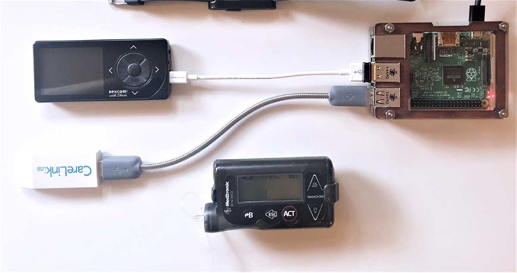
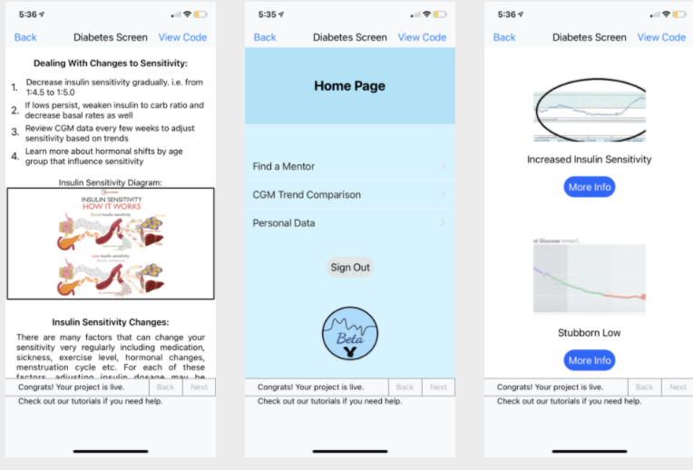
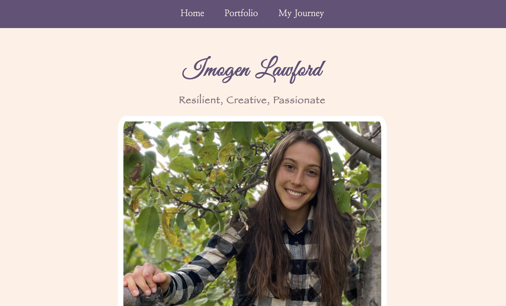
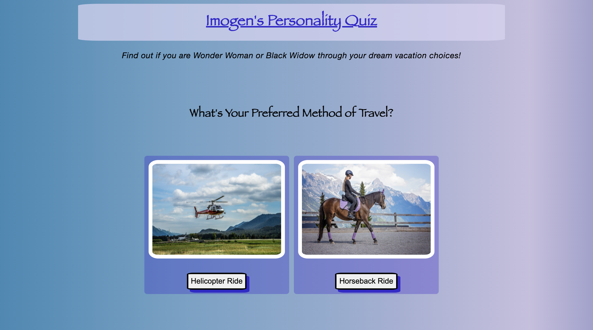

1.0 FireScape App

FireScape is a mobile app I programmed and developed that allows homeowners to improve their fire safety, plan their escape, and instant provide support in an emergency. In 2022, was awarded the Kingston Summer Company Grant to continue developing the app, and run my business. FireScape is currently in the launch phase.
To learn more about FireScape, you can visit FireScape's website and watch FireScape's demo video
2.0 T1D Mouthguard

In 2016, I built and programmed a prototype innovative mouthguard for Type 1 diabetics to detect nocturnal hypoglyceamia and alert the patient through a vibration, thus avoiding a hypoglycaemic seizure. For this project, I competed at Canada Wide Science Fair in Montreal, where I was awarded a silver medal and two awards.
To view my project overview, details and awards, check out my page on the CWSF archives website
3.0 Artificial Pancreas
In 2017, I programmed my own artificial pancreas OpenAPS system using open-source software. It automatically adjusts my insulin pump basal rates based on glucose readings from my continuous glucose monitor using the opensource algorithm, in order to keep my glucose levels inside target range.
To learn more about my artificial pancreas and the patient movement for self-automated glucose control, visit the OpenAPS wesbite
4.0 MyBeta App
In 2021, I participated in Technovation Girls, an international app-coding competition. I programmed an app called My Beta. My app integrates AI to help youth with T1D use their continuous glucose monitor data to effectively adjust insulin settings and improve glucose control.
Use this youtube link to watch the demo video for the MyBeta app
5.0 Personal Wesbite
In 2021, using HTML and CSS in addition to some JavaScript, I created this personal website to showcase my STEM experience and accomplishments as my first real coding project with these languages.
Use this link to view my code!
6.0 Personality Quiz
In 2021, I programmed a buzzfeed-style personality quiz using a combination of HTML (for content), CSS (for styling) and JavaScript (for user-interaction) to provide the user with a result based on their unique inputs.
Use these links to take my quiz and to view my code!